Take HEART: Dynamically Guardrailing OpenAPI Services with HATEOAS
How the Web learned to put controls next to information, how JSON APIs threw them away, how HEART puts them back, and how a gateway puts them back in front of any OpenAPI service, so every client and every AI agent sees only what it may do right now.
The Web never asked a person to guess what they were allowed to do. Each page showed the information and, beside it, the forms that applied to it now. Machines deserve the same, and with AI agents, need it.
Where hypertext came from
Eighty years of one idea: information you can act on from where you stand.
- 1945Vannevar Bush, "As We May Think". The Memex: a desk of documents joined by trails a reader follows and adds to.
- 1965Ted Nelson coins "hypertext": text that branches, where the reader chooses the path.
- 1968Douglas Engelbart's demonstration: links, windows and a mouse, live, with information you could click and change.
- 1989–91Tim Berners-Lee's Web: a proposal at CERN, then the first browser and server. Any page can link to any other, and one generic program, the browser, can follow them all.
- 1993–95Forms: Mosaic adds fill-out forms, and HTML 2.0 (RFC 1866) makes them standard. Pages stop only showing and start offering things to do.
- 2000Roy Fielding's dissertation names the architecture: REST, and its least-followed constraint, hypermedia as the engine of application state. The client moves from state to state by choosing among the controls each response carries.
- 2008Fielding, "REST APIs must be hypertext-driven": a rebuke to the "REST APIs" that had dropped exactly that.
The browser is the proof that it works. It knows nothing about any one site, and never needs updating when a site changes, because every page tells it what it can do next.
The gateway drug: one web page, four frames
From read-only to affordances, on a page about a single garden bed.
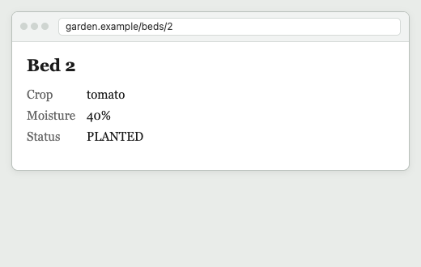
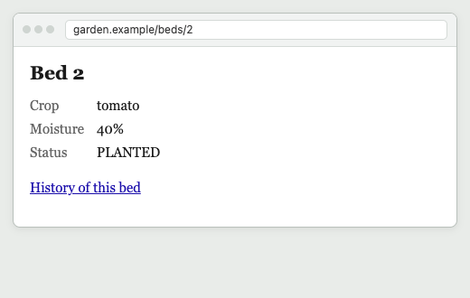
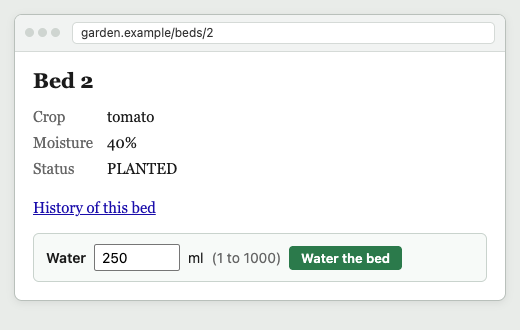
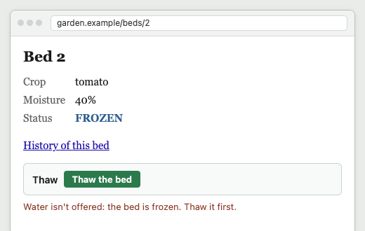
sequenceDiagram
autonumber
actor P as Person
participant B as Browser
participant S as Garden site
P->>B: open bed 2
B->>S: GET /beds/2
S-->>B: the bed, with the forms it allows now (Thaw)
B-->>P: shows the values and a Thaw button
P->>B: press Thaw
B->>S: POST, to where the form said
S-->>B: the bed again, with its new forms (Water)
Note over B,S: The browser never knew about beds, frost or watering.
Frame 4 is Fielding's definition of hypertext, word for word. In 2008 he wrote:
"the simultaneous presentation of information and controls such that the information becomes the affordance through which the user (or automaton) obtains choices and selects actions"
"Typed relations, specific media types, and action-specific elements provide the guidance needed for automated agents."
"All it needs to know is the meaning of those instructions and some idea of what it wants to do next, whether that purpose be user-driven, configuration-driven, or some sort of AI-driven."
JSON APIs threw the controls away. HEART puts them back.
The same bed, for machines: from zero affordances up to HEART, one control at a time.
A typical JSON API returns bed 2 as data, and nothing else: frame 1 again. A program reading it must already know every address, every rule and every field, from documentation written for people, and it learns the rules by failing:
sequenceDiagram autonumber participant C as Client (code written in advance) participant A as JSON API C->>A: GET /beds/2 A-->>C: plain state, no controls Note over C: Which acts? Where? Which fields?
All hard-coded from the docs. C->>A: POST /beds/2/actions/water-cell A-->>C: 409 Conflict: the bed is frozen Note over C: It learns the rule by failing.
Now build it back up, the way the page was built. Every response below is real: the garden's own answer about bed 2, served by HEART. Each step shows the whole response, with the lines it adds highlighted.
- Data only.
What a typical JSON API sends:
GET /beds/2,Accept: application/json. Frame 1: information, no controls.{ "id": 2, "label": "bed-2", "widthFt": 4, "lengthFt": 8, "status": "PLANTED", "cropName": "tomato", "growthPoints": 80, "moistureLevel": 40} - It names itself and its vocabulary.
A self link, and CURIEs:
garden:words are defined in the garden's profile,hr:words in HEART's. Like a page's address, and a page that's about something.{ "id": 2, "label": "bed-2", "widthFt": 4, "lengthFt": 8, "status": "PLANTED", "cropName": "tomato", "growthPoints": 80, "moistureLevel": 40, "_links": { "self": { "href": "/beds/2" }, "curies": [ { "name": "garden", "href": "/profiles/garden#{rel}", "templated": true }, { "name": "hr", "href": "https://w3id.org/heart-rise/rels/{rel}", "templated": true } ] }} - Forms: what you can do now, and where.
The act is keyed by its meaning,
garden:water-cell, with a title and description for people and models, a method, and a target. Frame 3's form and button.{ "id": 2, "label": "bed-2", "widthFt": 4, "lengthFt": 8, "status": "PLANTED", "cropName": "tomato", "growthPoints": 80, "moistureLevel": 40, "_links": { "self": { "href": "/beds/2" }, "curies": [ { "name": "garden", "href": "/profiles/garden#{rel}", "templated": true }, { "name": "hr", "href": "https://w3id.org/heart-rise/rels/{rel}", "templated": true } ] }, "_forms": { "garden:water-cell": { "title": "Water the bed", "description": "Pours water into every cell of a planted bed. Enough water makes it ready to harvest.", "_links": { "target": { "href": "/beds/2/actions/water-cell" } }, "method": "POST", "contentType": "application/json" } }} - What the act needs, embedded.
Its JSON Schema, inline: the one required field, its limits, an example to start from. Frame 3's "250 ml (1 to 1000)".
{ "id": 2, "label": "bed-2", "widthFt": 4, "lengthFt": 8, "status": "PLANTED", "cropName": "tomato", "growthPoints": 80, "moistureLevel": 40, "_links": { "self": { "href": "/beds/2" }, "curies": [ { "name": "garden", "href": "/profiles/garden#{rel}", "templated": true }, { "name": "hr", "href": "https://w3id.org/heart-rise/rels/{rel}", "templated": true } ] }, "_forms": { "garden:water-cell": { "title": "Water the bed", "description": "Pours water into every cell of a planted bed. Enough water makes it ready to harvest.", "_links": { "target": { "href": "/beds/2/actions/water-cell" } }, "method": "POST", "contentType": "application/json", "schema": { "$schema": "https://json-schema.org/draft/2020-12/schema", "properties": { "milliliters": { "description": "Millilitres of water poured into each cell", "examples": [ 250 ], "maximum": 1000, "minimum": 1, "title": "Water per cell", "type": "integer" } }, "required": [ "milliliters" ], "title": "Water Cell", "type": "object", "$id": "/schemas/7f232c04c52671dd" } } }} - Why the other acts are absent.
A link to the explanation, pinned by its integrity. Frame 4's red line, in the server's own words:
{ "id": 2, "label": "bed-2", "widthFt": 4, "lengthFt": 8, "status": "PLANTED", "cropName": "tomato", "growthPoints": 80, "moistureLevel": 40, "_links": { "self": { "href": "/beds/2" }, "curies": [ { "name": "garden", "href": "/profiles/garden#{rel}", "templated": true }, { "name": "hr", "href": "https://w3id.org/heart-rise/rels/{rel}", "templated": true } ], "hr:unavailable": { "href": "/unavailable/3257a9132e2fdd0b", "type": "application/json", "integrity": "sha256-MlepEy4v3Qt2z8jIohUJxoffZ2SOwNKCgJP7hMT/XV8=" } }, "_forms": { "garden:water-cell": { "title": "Water the bed", "description": "Pours water into every cell of a planted bed. Enough water makes it ready to harvest.", "_links": { "target": { "href": "/beds/2/actions/water-cell" } }, "method": "POST", "contentType": "application/json", "schema": { "$schema": "https://json-schema.org/draft/2020-12/schema", "properties": { "milliliters": { "description": "Millilitres of water poured into each cell", "examples": [ 250 ], "maximum": 1000, "minimum": 1, "title": "Water per cell", "type": "integer" } }, "required": [ "milliliters" ], "title": "Water Cell", "type": "object", "$id": "/schemas/7f232c04c52671dd" } } }}{ "unavailable": [ { "reason": "The bed is already planted.", "rel": "/profiles/garden#sow-seed", "title": "Sow a seed" }, { "reason": "The crop is not ready yet; it needs more water to grow.", "rel": "/profiles/garden#harvest", "title": "Harvest the crop" }, { "reason": "The bed is not frozen.", "rel": "/profiles/garden#thaw", "title": "Thaw the bed" } ]} - The whole response.
With its HTTP headers: the dialect, the profile it follows,
no-cache(check every time), and an ETag. An act must send that ETag back asIf-Match; a write that landed first is a 412, never a silent overwrite.HTTP/1.1 200 OKContent-Type: application/hal+jsonETag: "seq-3.hsf.L0.da0109b4d9380b72"Cache-Control: no-cacheLink: <https://w3id.org/heart-rise/hal-schema-forms>; rel="profile", <https://w3id.org/heart-rise>; rel="profile"Vary: Accept, Prefer, Accept-Profile { "id": 2, "label": "bed-2", "widthFt": 4, "lengthFt": 8, "status": "PLANTED", "cropName": "tomato", "growthPoints": 80, "moistureLevel": 40, "_links": { "self": { "href": "/beds/2" }, "curies": [ { "name": "garden", "href": "/profiles/garden#{rel}", "templated": true }, { "name": "hr", "href": "https://w3id.org/heart-rise/rels/{rel}", "templated": true } ], "hr:unavailable": { "href": "/unavailable/3257a9132e2fdd0b", "type": "application/json", "integrity": "sha256-MlepEy4v3Qt2z8jIohUJxoffZ2SOwNKCgJP7hMT/XV8=" } }, "_forms": { "garden:water-cell": { "title": "Water the bed", "description": "Pours water into every cell of a planted bed. Enough water makes it ready to harvest.", "_links": { "target": { "href": "/beds/2/actions/water-cell" } }, "method": "POST", "contentType": "application/json", "schema": { "$schema": "https://json-schema.org/draft/2020-12/schema", "properties": { "milliliters": { "description": "Millilitres of water poured into each cell", "examples": [ 250 ], "maximum": 1000, "minimum": 1, "title": "Water per cell", "type": "integer" } }, "required": [ "milliliters" ], "title": "Water Cell", "type": "object", "$id": "/schemas/7f232c04c52671dd" } } }} - The same bed, after the frost.
Nothing on the client changed. The highlighted lines are what the server changed: the status, the validator, the explanation, and the one form a frozen bed allows. Frame 4.
HTTP/1.1 200 OKContent-Type: application/hal+jsonETag: "seq-4.hsf.L0.2247f81de1740d4c"Cache-Control: no-cacheLink: <https://w3id.org/heart-rise/hal-schema-forms>; rel="profile", <https://w3id.org/heart-rise>; rel="profile"Vary: Accept, Prefer, Accept-Profile { "id": 2, "label": "bed-2", "widthFt": 4, "lengthFt": 8, "status": "FROZEN", "cropName": "tomato", "growthPoints": 80, "moistureLevel": 40, "_links": { "self": { "href": "/beds/2" }, "curies": [ { "name": "garden", "href": "/profiles/garden#{rel}", "templated": true }, { "name": "hr", "href": "https://w3id.org/heart-rise/rels/{rel}", "templated": true } ], "hr:unavailable": { "href": "/unavailable/5afcf05b76af098e", "type": "application/json", "integrity": "sha256-WvzwW3avCY7C00xE20JKH6YJtkrdLTm6F9aGkC4W0yE=" } }, "_forms": { "garden:thaw": { "title": "Thaw the bed", "description": "Covers a frozen bed with fleece. The bed becomes planted again.", "_links": { "target": { "href": "/beds/2/actions/thaw" } }, "method": "POST", "contentType": "application/json", "schema": { "$schema": "https://json-schema.org/draft/2020-12/schema", "properties": {}, "title": "Thaw", "type": "object", "$id": "/schemas/bd8f0a92596bdbc5" } } }}{ "unavailable": [ { "reason": "The bed is frozen with a crop in it; thaw it first.", "rel": "/profiles/garden#sow-seed", "title": "Sow a seed" }, { "reason": "The bed is frozen; watering now would split the roots. Thaw it first.", "rel": "/profiles/garden#water-cell", "title": "Water the bed" }, { "reason": "The crop is frozen and not ready; thaw it first.", "rel": "/profiles/garden#harvest", "title": "Harvest the crop" } ]}
That's HEART at its first rung, L0: everything in one response, the forms and their schemas fully embedded. A generic client renders whatever comes, the way a browser renders a page.
Advanced: making it cheap, with shared affordance sets and schemas (L1, L2)
Every planted bed carries the same forms. So a client can ask for them by reference: one header, Prefer, and the forms move out into a resource of their own, named by its content, cached forever, and shared by every bed in the same state. The answer about the bed shrinks back toward data plus one link.
- L1: Prefer: forms=link.
The embedded forms are gone; one
hr:formslink takes their place, with the set's integrity. The server confirms the preference it applied.HTTP/1.1 200 OKContent-Type: application/hal+jsonETag: "seq-3.hsf.L1.3e96222f79e90255"Cache-Control: no-cacheLink: <https://w3id.org/heart-rise/hal-schema-forms>; rel="profile", <https://w3id.org/heart-rise>; rel="profile"Vary: Accept, Prefer, Accept-ProfilePreference-Applied: forms=link { "id": 2, "label": "bed-2", "widthFt": 4, "lengthFt": 8, "status": "PLANTED", "cropName": "tomato", "growthPoints": 80, "moistureLevel": 40, "_links": { "self": { "href": "/beds/2" }, "curies": [ { "name": "hr", "href": "https://w3id.org/heart-rise/rels/{rel}", "templated": true } ], "hr:forms": { "href": "/affordance-sets/0f79a6afa3aecc62", "type": "application/hal+json", "profile": "https://w3id.org/heart-rise/hal-schema-forms", "integrity": "sha256-D3mmr6OuzGJMBtgJ9kDovuchlkgwVF99/snUV67spNk=" } }} - The affordance set it links.
Served
public, max-age=31536000, immutable: the same bytes for every planted bed, so its target is a template, filled from the bed byhr:templatePointers. (A set is served in canonical key order; it's shown here in the same reading order as above.){ "_links": { "curies": [ { "name": "garden", "href": "/profiles/garden#{rel}", "templated": true }, { "name": "hr", "href": "https://w3id.org/heart-rise/rels/{rel}", "templated": true } ], "hr:unavailable": { "href": "/unavailable/3257a9132e2fdd0b", "type": "application/json", "integrity": "sha256-MlepEy4v3Qt2z8jIohUJxoffZ2SOwNKCgJP7hMT/XV8=" } }, "_forms": { "garden:water-cell": { "title": "Water the bed", "description": "Pours water into every cell of a planted bed. Enough water makes it ready to harvest.", "_links": { "target": { "href": "/beds/{id}/actions/water-cell", "templated": true } }, "hr:templatePointers": { "id": "/id" }, "method": "POST", "contentType": "application/json", "schema": { "type": "object", "title": "Water Cell", "$schema": "https://json-schema.org/draft/2020-12/schema", "properties": { "milliliters": { "type": "integer", "title": "Water per cell", "description": "Millilitres of water poured into each cell", "examples": [ 250 ], "maximum": 1000, "minimum": 1 } }, "required": [ "milliliters" ], "$id": "/schemas/7f232c04c52671dd" } } }} - L2: Prefer: forms=link, schema=link.
Still one link, now to a set whose schemas are references too.
HTTP/1.1 200 OKContent-Type: application/hal+jsonETag: "seq-3.hsf.L2.e5fc4c410d71d044"Cache-Control: no-cacheLink: <https://w3id.org/heart-rise/hal-schema-forms>; rel="profile", <https://w3id.org/heart-rise>; rel="profile"Vary: Accept, Prefer, Accept-ProfilePreference-Applied: forms=link, schema=link { "id": 2, "label": "bed-2", "widthFt": 4, "lengthFt": 8, "status": "PLANTED", "cropName": "tomato", "growthPoints": 80, "moistureLevel": 40, "_links": { "self": { "href": "/beds/2" }, "curies": [ { "name": "hr", "href": "https://w3id.org/heart-rise/rels/{rel}", "templated": true } ], "hr:forms": { "href": "/affordance-sets/3bba3310d85252f4", "type": "application/hal+json", "profile": "https://w3id.org/heart-rise/hal-schema-forms", "integrity": "sha256-O7ozENhSUvSNlDFt8RmCRvfTkLDW5gPRWPQGkheoQvM=" } }} - The set, with its schema by reference.
Each schema is its own immutable resource, pinned by integrity, shared by every form that uses it:
{ "_links": { "curies": [ { "name": "garden", "href": "/profiles/garden#{rel}", "templated": true }, { "name": "hr", "href": "https://w3id.org/heart-rise/rels/{rel}", "templated": true } ], "hr:unavailable": { "href": "/unavailable/3257a9132e2fdd0b", "type": "application/json", "integrity": "sha256-MlepEy4v3Qt2z8jIohUJxoffZ2SOwNKCgJP7hMT/XV8=" } }, "_forms": { "garden:water-cell": { "title": "Water the bed", "description": "Pours water into every cell of a planted bed. Enough water makes it ready to harvest.", "_links": { "target": { "href": "/beds/{id}/actions/water-cell", "templated": true } }, "hr:templatePointers": { "id": "/id" }, "method": "POST", "contentType": "application/json", "schema": { "$ref": "/schemas/7f232c04c52671dd", "hr:integrity": "sha256-fyMsBMUmcd0HdvI4xkfZO3dvViJqO0HdGynlKasuMdQ=" } } }}{ "$schema": "https://json-schema.org/draft/2020-12/schema", "properties": { "milliliters": { "description": "Millilitres of water poured into each cell", "examples": [ 250 ], "maximum": 1000, "minimum": 1, "title": "Water per cell", "type": "integer" } }, "required": [ "milliliters" ], "title": "Water Cell", "type": "object"}
Agents get frame 4.
sequenceDiagram autonumber participant C as Generic client (ARTIE, or an agent) participant H as HEART server C->>H: GET / (the only address it knows) H-->>C: the bookmark: search and lookup forms C->>H: GET /beds/2 H-->>C: state + forms allowed now + ETag Note over C: Choose among what's offered.
Fill the schema. Never guess. C->>H: POST to the form's target, If-Match: ETag H-->>C: the bed's new state, with its new forms
Meanwhile, the industry chose the page with every form on it
OpenAPI, and how far it can be layered back up.
Begin again, with a different page. Picture the garden's plant shop putting every inventory action on one page: eight blank forms, every one asking for a plant ID, each with a red sentence saying when it would work. It's accurate. Every form works, if you fill it in right, for a plant in the right state. It's still terrible design: it asks for what it already knows, makes you apply the rules, and teaches by failure. The page on the right is the same shop designed the way the Web is: each plant, as it is now, with only the forms it allows, and a word about the rest.
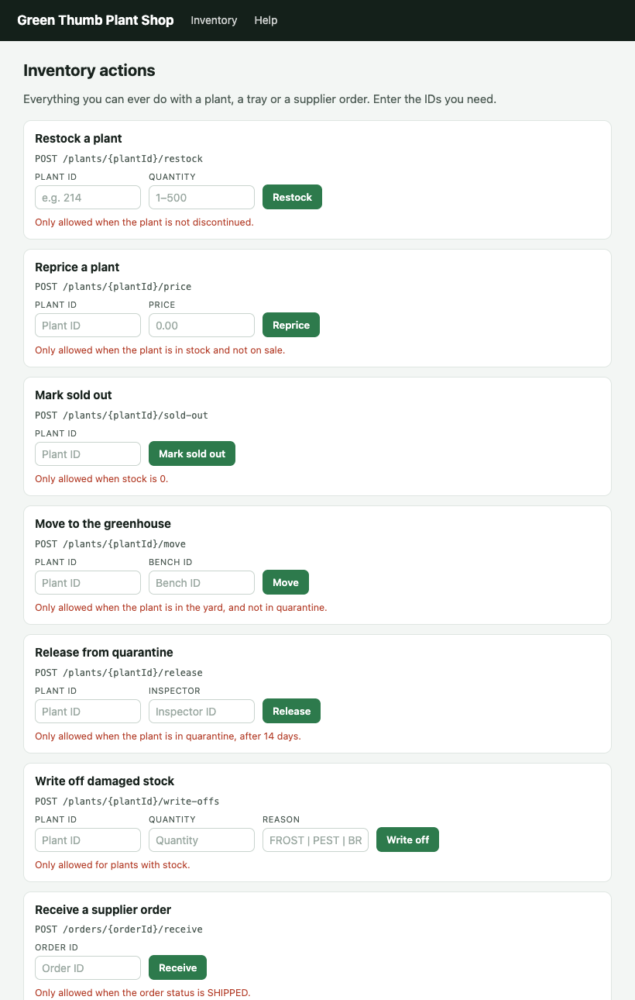
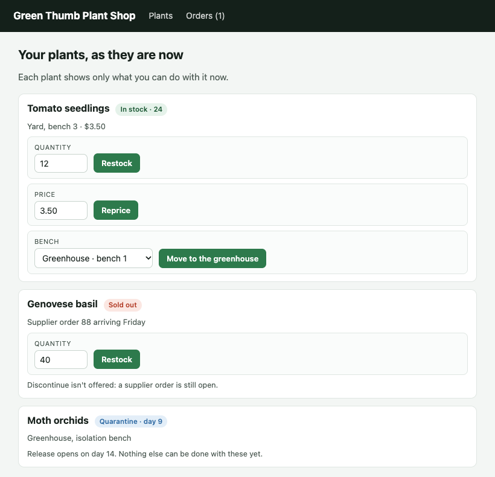
An OpenAPI description is the left-hand page. Each form card is an operation; each blank ID is a path parameter; each red sentence is a description. It lists everything a service can ever do, for every resource, in every state. That's what it was designed for, describing HTTP APIs, and it does it well. What it can't say is which of those this plant, or this bed, allows now.
| On the page for people | In the OpenAPI description |
|---|---|
| A form card, "Release from quarantine" | An operation, POST /plants/{plantId}/release |
| A blank "Plant ID" field | A required path parameter |
| The red sentence about when it works | The description: "Only allowed when the plant is in quarantine, after 14 days." |
| Pressing Release on day 9 | 409 Conflict |
So layer it back up, the way we built up the JSON. Each rung is something real, and we measured each one against the same garden.
- Read the description at run time.No generated code; the client reads operations, titles and schemas while it runs, so moved paths, renamed fields and new inputs don't break it. But it still shows every button on a frozen bed: a description can't know the bed froze.
- An allowed-actions field in the answer.Many real APIs already do this, each its own way: Google Drive's
capabilities(canTrash,canDelete), Box's permissions, PayPal'slinkswithrelandmethod, OData 4.01's advertised actions ("#Ns.Action": {}, ornullwhen unavailable). The client can now hide what isn't allowed, if it knows that API's convention. - A Link to a HEART affordance set.One header on each plain answer points at the set of forms for its state, step 7 of Act III, reached from the other side. A client that follows it shows only Thaw on the frozen bed. It's HATEOAS, arrived at by fixing OpenAPI.
- The gateway.Take the description plus any of those signals, and serve the whole of Act III in front of the service: forms, schemas, reasons, validators, the bookmark. Any HEART client, any agent, works unchanged.
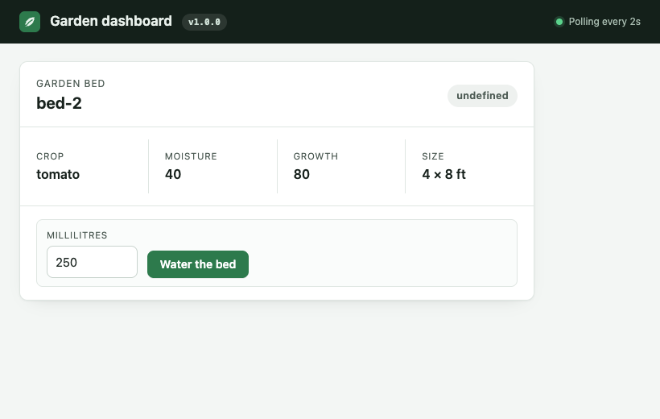
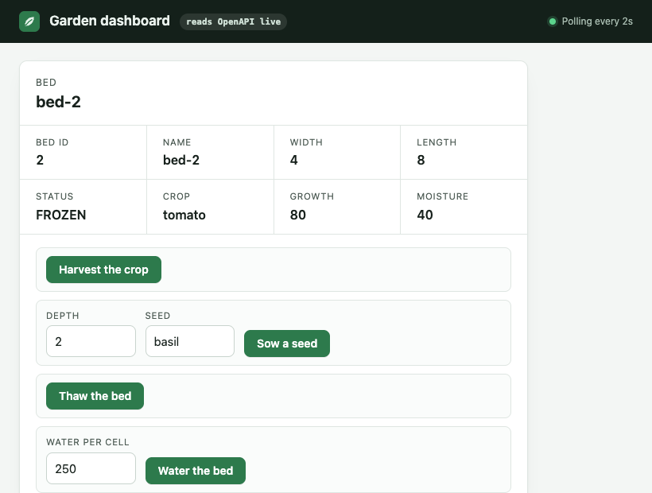
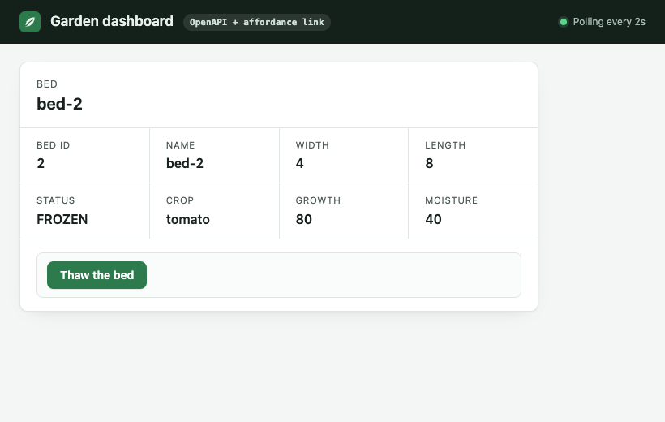
sequenceDiagram
autonumber
participant C as Dynamic OpenAPI client
participant A as Service (plain JSON + Link)
C->>A: GET /openapi.json (every operation, ever)
C->>A: GET /beds/2
A-->>C: plain state + Link: rel="…/rels/forms"
C->>A: GET the affordance set (cached by content)
A-->>C: forms allowed now: garden:thaw
Note over C: Keep only operations a form names.
C->>A: POST /beds/2/actions/thaw
The gateway: OpenAPI in, HEART out
Rung 4, built and proven.
To test the gateway honestly, we gave it the hardest job: start from a HEART server, flatten it into OpenAPI, and see if the gateway can rebuild HEART from that alone.
Reading: the answer travels out
- HEARTThe garden serverKnows beds, rules and frost. Declared once, in Kotlin.
- OpenAPIFlattened into its twin
/openapi.json, plain JSON with no controls, and oneLinkheader per answer. - GatewayReads the spec and the signalKnows nothing about gardens. Builds resource types from the spec; learns what's allowed now from the Link.
- HEARTRebuiltState, forms allowed now, schemas, reasons, ETag, profile, bookmark.
- ClientARTIE renders itUnchanged. Shows Thaw on a frozen bed, and nothing else.
Acting: the request travels in
- ClientARTIE chooses a formFills its schema, posts to the form's target with
If-Match: the ETag it saw. - GatewayChecks, as HEART mustOffered now? Body valid? ETag current? Refuses with 409, 422, 412 or 428 before anything is sent.
- GatewayRe-reads, then callsConfirms the bed hasn't changed, then calls the OpenAPI operation, as itself.
- OpenAPIThe service actsA plain POST, a plain JSON answer, and a new
Linkfor the new state. - HEARTNew state, new formsRebuilt again: the client sees Water back, with no code change.
…but why?
Fair question. We had a perfectly good HEART server. We flattened it into OpenAPI, built a machine to un-flatten it, then pointed a client at the machine to check it hadn't noticed. It's translating a novel into French and back to see whether the translator can be trusted.
That's exactly why. The native garden is the answer key: anything the gateway drops shows up as a different result. And the middle of the diagram is everyone else's API. If the gateway can rebuild HEART from the twin, it can build HEART in front of them.
sequenceDiagram
autonumber
participant C as ARTIE / agent
participant W as Gateway
participant U as Upstream (OpenAPI service)
W->>U: at start: GET /openapi.json, build resource types
C->>W: GET /beds/2
W->>U: GET /beds/2 (plain JSON)
U-->>W: state + signal (Link, capabilities, links…)
W-->>C: HEART: state + forms allowed now + reasons + ETag
C->>W: POST thaw, If-Match: ETag
W->>U: GET /beds/2 again: unchanged since the client saw it?
W->>U: POST /beds/2/actions/thaw
U-->>W: new state + new signal
W-->>C: HEART: new state + new forms
The whole gamut, live
We ran every client against the same garden on 16 October 2026: the dashboard generated from the description; the description-reading client without the link (rung 1) and with it (rung 3); ARTIE against native HEART; and ARTIE through the gateway.
The frost: a change of state, not of the API. The suite checks each client shows exactly the buttons the bed allows.
| Client | Monday | Tuesday, the frost |
|---|---|---|
| Generated from the description | 3/3 | 3/7 |
| Rung 1: reads the description live | 0/3 | 1/7 |
| Rung 3: plus the affordance link | 3/3 | 7/7 |
| ARTIE, native HEART | 3/3 | 7/7 |
| ARTIE, through the gateway | 3/3 | 7/7 |
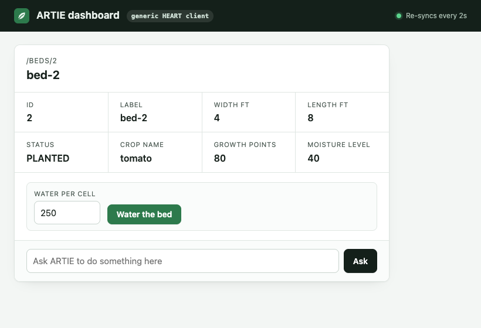
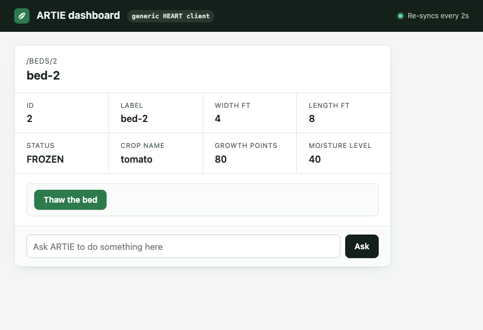
The six Wednesday changes: the API itself changes, one release at a time, and each client, unchanged since Monday, tries to water bed 2. "Scripted" is ARTIE driven by code that names the act garden:water-cell and its field: what hard-coding costs.
| Change | Generated | Rung 1 | Rung 3 | ARTIE native | ARTIE gateway | Scripted native | Scripted gateway |
|---|---|---|---|---|---|---|---|
| move-url | 404 | watered | watered | watered | watered | watered | watered |
| rename-field | watered | watered | watered | watered | watered | watered | watered |
| rename-act | watered | watered | watered | watered | watered | not found | not found |
| retitle | watered | watered | watered | watered | watered | watered | watered |
| tighter-limit | 422 at 800 ml | watered | watered | watered | watered | watered | watered |
| new-required-input | 422 | watered | watered | watered | watered | 422 | 422 |
Through the gateway, every result matches native HEART, change by change. And HEART's conformance kit, run through the gateway in front of an OpenAPI twin, passes 23 of 23: forms, revalidation, 428, 412, 409, 422, credentials, the bookmark.
An earlier run differed on rename-act: the garden renamed its HEART relation (water-cell to irrigate) but kept its OpenAPI operation waterCell, and the gateway named relations after operation ids. The fix was at the source: a description generated by a HEART server now says which relation each operation is, in an x-heart-relation extension (switched on with the links, so a published description keeps its bytes), and the gateway uses it where present.
What an existing OpenAPI service has to change
Very little, and often nothing. The gateway needs one thing beyond the description: a per-resource signal of what's allowed now.
- Add one Link header.The best: shared, cached sets of forms, and the only signal besides a table that says why an act is absent.
- Nothing new: say what you already say.A list of allowed action names, a map of booleans (Drive, Box), an array of links (PayPal), or OData's advertised actions. The gateway reads them as they are.
- Nothing at all: write the rules down.A table in the gateway, "when
statusisLOCKED, onlyunlock, because…". Early binding, in one place instead of every client; the last resort.
That's configured with a connector: a folder per API, so a fix to one API is a pull request to its folder alone. Most APIs need one small file:
# connectors/drive/connector.yaml
profile: drive
readers: [file.reader.yaml]
# connectors/drive/file.reader.yaml: the API's default reader
allowed:
booleans: /capabilities
map: { canTrash: trashFile, canDelete: deleteFile }
hide: [/capabilities]- Readers recognize answers. Where an API is inconsistent, a reader can match a member of the body, the media type, or the path;
connector.yamllists them in order and the first that recognizes an answer reads it. - An escape hatch: a JSONata expression in a file beside its reader, with no I/O and bounded in time and depth.
- Standards need no connector: HEART's Link and OData's advertised actions are read by the gateway itself.
- It fails loudly: a connector naming an operation or path the description lacks stops the gateway at start, naming the file; an answer nothing recognizes is refused. The gateway never guesses.
Its tests put the gateway in front of a small door service that knows nothing about HEART, signalling each of these ways in turn: 26 scenarios, all passing.
Honest limits
- Without the service's own If-Match, the gateway re-reads before acting and refuses if anything changed, but a write landing in between can't be caught.
- Reasons for absent acts come only from the Link and from tables.
- The gateway calls the service as itself. Services whose rules depend on who's asking need each caller's own credential passed through; planned, not built.
- Our own services so far, and one run of a small suite per table: evidence of behaviour, not a benchmark.
Your pull requests, as HEART
GitHub publishes its full OpenAPI description, and a pull request is all state: open or closed, draft or ready, mergeable or not, behind or blocked. Part 2 puts the gateway in front of GitHub, so you can ask "what's the status of my PRs?", "why can't I merge #482?", "merge the one that's ready", and be offered merge only when GitHub would accept it, with the reason when it wouldn't: behind main, conflicts, a required check missing, still a draft.
On a scratch repository, with the reader's own token; nothing merged on a real repository without explicit say-so.